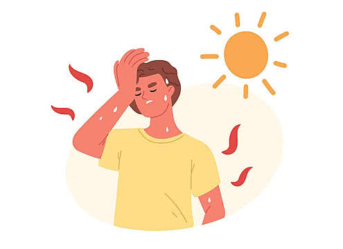

Memahami Dehidrasi & Dampaknya
Edukasi singkat mengenai kondisi saat tubuh kekurangan cairan serta tanda-tanda yang perlu diwaspadai.

Visualisasi: Keseimbangan Cairan Sel Tubuh
Apa itu Dehidrasi?
Kondisi ketika tubuh kehilangan lebih banyak cairan daripada yang dikonsumsi, sehingga fungsi organ tidak berjalan secara optimal.
Gejala Utama
Mulut kering, rasa haus berlebih, lemas, pusing, hingga warna urine yang berubah menjadi gelap.
Tips Mencegah Dehidrasi
Rutin Minum Air
Konsumsi minimal 8 gelas air putih sehari tanpa menunggu rasa haus datang.
Buah Kaya Air
Perbanyak konsumsi semangka, jeruk, dan mentimun untuk asupan cairan tambahan.
Imbangi Aktivitas
Tambahkan porsi minum saat berolahraga atau berada di cuaca yang terik.